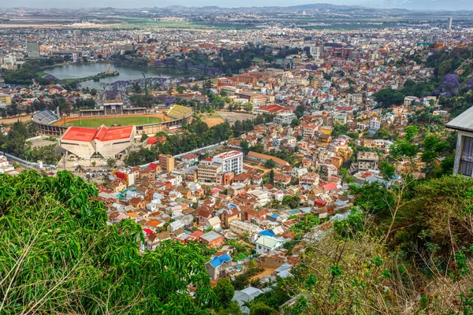

Les zones rouges d'Antananarivo

1.Manjakaray
Ce quartier du 5ème arrondissement est connu pour être densément peuplé. La densité de population peut parfois
être associée à des défis sécuritaires dans les zones urbaines.
2.Andravoahangy
Situé dans le 3ème arrondissement, Andravoahangy est une zone commerciale importante avec son marché
animé.
Les marchés très fréquentés peuvent parfois être des points chauds pour la petite criminalité.
3.Avaradoha
Anjanahary est un quartier du 5ème arrondissement.
4.Anjanahary
Situé dans le 1er arrondissement, Faravohitra est un quartier résidentiel et commercial.
5.Faravohitra
Ce quartier du 5ème arrondissement est connu pour être densément peuplé.
6.Ankadifotsy
Ankadifotsy se trouve dans le 3ème arrondissement.
7.Tsiazotafo
Tsiazotafo est un quartier du premiere arrondissement
8.Behoririka
Behoririka, dans le 3ème arrondissement, est un quartier populaire en rénovation.
9.Analakely
Centre du 1er arrondissement, Analakely est une zone très fréquentée pour le commerce. Les zones à
forte
concentration de personnes peuvent parfois être sujettes à des problèmes de sécurité.
10.Ambodin’Isotry
Ambodin’Isotry est un quartier du 1er arrondissement.
11.67 ha
Le quartier de 67 ha dans le 1er arrondissement est connu pour sa forte densité de population et sa
pauvreté, ce qui peut contribuer à des problèmes de sécurité . Certaines sources indiquent que certaines
parties de 67 ha sont considérées comme craignant un peu .
12.Andavamamba
Ankorondrano, dans le 3ème arrondissement, est décrit comme un quartier de taille moyenne.
13.Ankorondrano
Ankorondrano, dans le 3ème arrondissement, est décrit comme un quartier de taille moyenne.
14.Ampefiloha
Ampefiloha est situé dans plusieurs arrondissements.
15.Antanimena
Antanimena est un quartier du 3ème arrondissement.
16.Isotry
Isotry, dans le 1er arrondissement, est identifié comme l'un des quartiers les plus densément peuplés et
les
plus pauvres de la ville, ce qui est souvent associé à une criminalité plus élevée .
17.Mahamasina
Mahamasina est le chef-lieu du 4ème arrondissement.
18.Tsaralalàna
Tsaralalàna est un quartier du 1er arrondissement. Bien que les extraits ne détaillent pas la
situation
sécuritaire, la présence d'une gendarmerie est notée